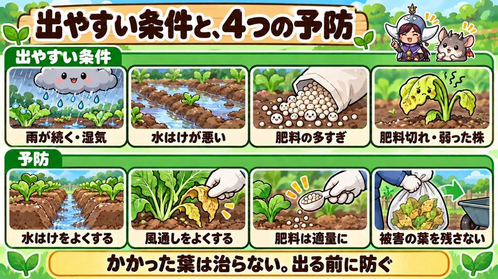
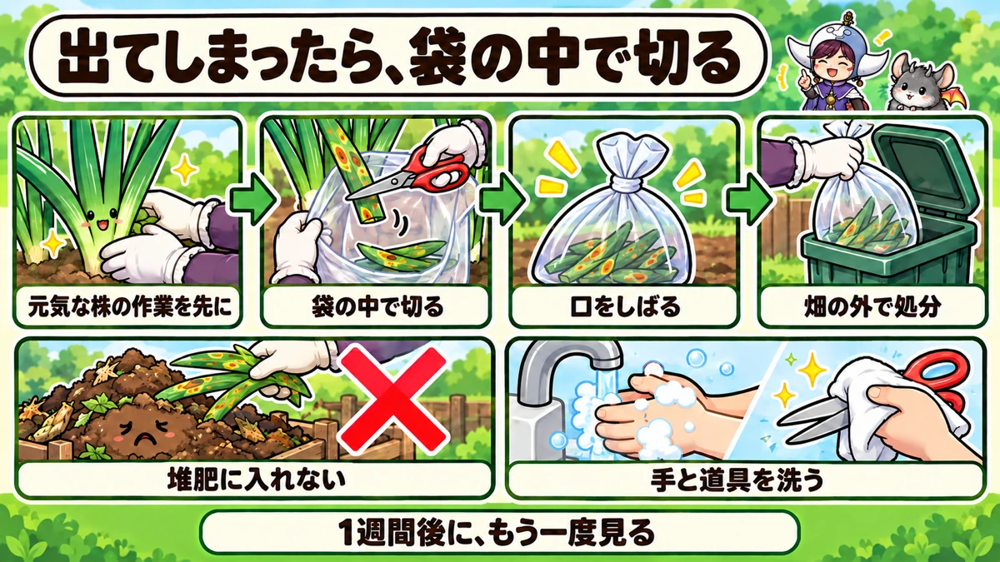

Rust and white rust 🧅 Spot them early, cut them early
🧅 "There are little orange spots on my leek leaves, and orange powder comes off on my finger."
🧅 "Just before harvest, my garlic leaves were covered in orange dots and turned yellow."
🧅 "I turned over a turnip leaf and found lots of white blisters underneath."
Hello, I'm Eiko. Eight years of growing vegetables organically and without pesticides, and a teaching licence in science.
Those are probably rust and white rust. Once either gets going it's hard to stop — but if you know when and where they appear, you can prevent a great deal of it without sprays. This article covers telling the two apart, when they strike, prevention, what to do once they appear, and crop-by-crop cautions.
Where you are: rust on the onion family (leeks, garlic, onions, chives, Welsh onions) and white rust (white blister) on brassicas (turnips, radishes, Chinese cabbage, mustard greens) are found across temperate regions. Timings below are for central Japan, where both peak in the cool, wet weeks of spring and autumn; in a mild maritime climate they can run on through a wet winter, while hot, dry summers stop them almost everywhere.
The essentials: infected leaves never recover, so prevention is everything: good drainage, good airflow, fertiliser neither too much nor too little, and no infected debris left on the plot. When spots appear, cut the leaves inside a plastic bag, tie it, and put it in the rubbish — not on the compost heap. Work on healthy plants first, and wash hands and tools afterwards.
① At a glance
Rust
- Crops: leeks, Welsh onions, garlic, onions, rakkyo, garlic chives (the onion family)
- Symptoms: small, slightly raised orange or rusty-brown spots on the leaves. Rub one and rust-coloured powder comes off
- When: spring and autumn, in cool, rainy spells
- How it spreads: spores from the spots blow and splash onto other leaves
- What to do: cut off infected leaves and take them off the plot; sort out drainage, airflow and feeding
White rust
- Crops: turnips, radishes (daikon), komatsuna, Chinese cabbage, mizuna (the cabbage family)
- Symptoms: small white, wart-like blisters under the leaves; a blurred yellowish patch on the upper side. On radishes, dark ring-like marks can appear on the root
- When: late autumn and early spring, when rain and night dew are heavy
- How it spreads: the white blisters burst and release spores
- What to do: cover infected leaves with a bag before removing them; improve drainage; don't crowd plants or overfeed
Easily confused with
- Silvery white flecks on leek leaves → thrips (tiny insects). No orange spots
- Larger pale-yellow blotches on onions or leeks, with mould on damp days → downy mildew
- Leaves yellowing from the tip → may simply be hunger, thirst or cold
Rust or downy mildew?
Downy mildew is common on onions and leeks too. It makes larger, pale-yellow, fuzzy-edged blotches, and on damp days grey to pale-purple mould grows on them. Badly affected leaves fold over at the blotch and die. Rust's small, raised orange spots look quite different. Both like wet weather, so you can get both in the same bed.
Rust or thrips?
Whitish, scratched-looking patches or streaks on leeks and onions are where thrips have sucked the sap. Look closely and you'll find tiny slender insects tucked between the leaves. There's no orange powder. If it's thrips, treat it as a pest, not a disease.
What this diagram says （図解の文字）
- Telling rust and white rust apart
- "Rust": "Leeks, garlic, onions, garlic chives" ／ "Raised orange spots" ／ "Powder comes off when rubbed" ／ "Spring and autumn"
- "White rust": "Turnips, radishes, komatsuna, Chinese cabbage" ／ "White blisters under the leaf" ／ "Blurred yellow on top" ／ "Late autumn and early spring"
- "Similar names — different diseases"
② About rust
What it is
Rust is a fungal disease that grows on the leaves. It's named for the small orange spots that look like rust on iron. Each spot is packed with spores — the fungus's equivalent of seeds — and when it bursts, wind and rain carry them to neighbouring leaves and plants.
Which crops
Mostly the onion family: leeks, Welsh onions, garlic, onions, rakkyo, garlic chives and shallots. Grow several together and rust on one can move to its neighbours.
Infected leaves don't recover
An infected leaf never returns to normal. As spots multiply, the leaf makes less food from sunlight and eventually yellows and dies. Lose the leaves and the plant stops growing: leeks don't thicken, and garlic and onion bulbs stay small. That's why prevention, and fast action at the first spots, matter so much.
How bad can it get?
- Leeks: unsightly leaves and thin stems; in bad cases whole plants die
- Garlic: leaves die back early and bulbs stay small
- Onions: leaves die early and bulbs stop swelling
- Garlic chives: it reappears on the regrowth after every cut, and yields fall
The fungus waits on infected leaves
Rust is said to survive winter and summer on infected leaves, then spread again when wet weather returns. A plot with heavy rust one year is likely to see it the next. Not leaving infected leaves behind is next year's prevention.
③ Recognising rust
It starts as pinpricks
At first you'll see tiny reddish dots, as if from a pin — small enough to miss. They usually start on the lower leaves near the ground, so check those too.
Then raised orange pustules
As they grow, the dots become slightly raised oval orange pustules. When these break open, rust-coloured powder comes out. Rub one and the powder comes off on your finger — that's what sets rust apart.
Then the leaves die
Once spots cover a leaf it yellows and dies back from the tip. When the whole plant looks orange, it's too late to save.
Tips for spotting it
- On a bright, sunny day, look along the leaves from the side: raised spots are easier to see
- Start with small, weak plants and crowded spots
- If a leaf looks off-colour, rub it gently with a finger
④ Checking your crops
When
Look once or twice a week normally, and always on the first fine day after several days of rain — both diseases spread after wet spells. Check more often in spring and autumn.
Where
- Onion family: lower leaves near the ground, and small, weak plants
- Cabbage family: blurred yellow patches on top of the leaves — then turn the leaf over
- Both: crowded middles of beds, and low spots where water collects
Keep a note
Note when, on which crop and in which part of the bed it appeared. It tells you when to step up checks next year. A phone photo of the spots makes later comparison easy.
⑤ When and why rust strikes
Cool spring and autumn weather
Rust spreads little in the heat of summer or the depth of winter; it's a spring and autumn disease. Even if summer heat halts it, it can start again as autumn cools, and in a warm autumn it may continue into November and December. In central Japan, leeks are hit mainly from late spring into the rainy season and again in September–October, and garlic and onions mainly in April–May.
Long wet spells
Rainy years bring more rust. Poorly drained ground where water lies after rain is worse, and so is soil kept constantly wet by overwatering.
Too much fertiliser — or too little
Too much fertiliser, especially nitrogen, grows soft leaves that catch rust easily. But plants weakened by running out of fertiliser are also more susceptible. Feed neither too much nor too little, in step with growth.
Weak, small plants
Stunted plants tend to catch rust early and then become the source that spreads it to others.
Planting too early
Onions and garlic planted too early, which grow too big before winter, are said to suffer more disease in spring. Plant at the right time for your area.

What this diagram says （図解の文字）
- When it strikes, and four ways to prevent it
- "Conditions that favour it": "Long rain, humidity" ／ "Poor drainage" ／ "Too much fertiliser" ／ "Hungry, weak plants"
- "Prevention": "Improve drainage" ／ "Improve airflow" ／ "Feed the right amount" ／ "Don't leave infected leaves"
- "Infected leaves don't recover. Prevent it before it starts"
⑥ Preventing rust
1. Improve drainage
Dig well when preparing the soil and make raised beds so water doesn't lie after rain. A channel between beds to carry water away helps too.
2. Improve airflow
Regularly remove dead and yellowed lower leaves. Dead leaves piled round the base trap moisture. Pick up fallen leaves too and take them off the plot. Where plants are crowded, harvest what you can early to open things up.
3. Feed the right amount
Stick to the recommended side dressing. Feeding again and again "because it's growing slowly" overloads the nitrogen and invites rust. With garlic and onions, take particular care not to overfeed once spring warms up. Equally, don't skip the feeds they need, or they'll weaken.
4. Don't overwater
The onion family dislikes excess moisture. If the soil isn't dry below the surface, don't water.
5. Leave no infected debris
Don't leave last year's rusty leaves or plants on the plot. When clearing up, bag infected leaves and take them away.
6. Plant at the right time
Don't plant onions and garlic too early. Planted at the right time, they go into winter at an even size and suffer less disease in spring.
7. Space plants properly
Close planting means overlapping leaves, still air and trapped moisture. Space them properly at planting, and when they crowd, thin them by harvesting.
8. Start with healthy plants and sets
Choose leek transplants with good colour and no spots. Choose garlic cloves of an even size, firm and sound. Small, weak plants catch disease more easily, so choosing well is prevention too.
⑦ If rust appears
1. Cut off infected leaves early
Remove leaves with orange spots promptly. While there are only a few spots, taking those leaves alone can contain it. On leeks, cut the affected leaves from the bottom.
2. Don't scatter the spores
Touching the spots releases clouds of orange spores. Open a plastic bag, hold it under the leaf and cut so the leaf falls inside. Tie the bag and take it off the plot. Don't pile infected leaves in a corner or bury them.
3. Pull small, weak plants
Stunted plants riddled with rust are a source of infection for the rest. Be decisive: pull them and remove them.
4. Lift garlic early if need be
If rust spreads through garlic close to harvest, leaving it in the ground may not make the bulbs any bigger. Harvesting early is one way to stop it spreading. Cut off and dispose of any infected leaves on the harvested bulbs.
Look again a week later
About a week after removing leaves, check the same plants and their neighbours. No new spots means it's contained. If they're still increasing, pull that plant and check the others carefully.
5. Wash hands and tools
Spores cling to hands, clothes and scissors. After working in a rusty bed, wash your hands and tools before moving on to other crops.
⑧ Removing infected leaves, step by step
What you need
- Sharp scissors
- A plastic bag you can tie
- Gloves (or wash your hands well afterwards)
Steps
- Work when the leaves are dry — not in rain or while the dew is still on them
- Do your jobs on healthy plants first
- Hold the open bag under the infected leaf and cut so it drops inside
- Go plant by plant, taking only infected leaves. If unsure, rub to check for powder first
- Tie the bag tightly when you've finished
- Pick up fallen leaves and dead leaves at the base and add them to the bag
- Take the bag off the plot and put it in the rubbish
- Wipe the scissors and wash your hands
The trick is not to go back to healthy plants after handling diseased ones: hands and tools can carry it.
Don't compost them
Keep infected leaves out of the compost heap or the debris pile. Home compost often doesn't get hot enough to kill disease, so the fungus can survive to start next season.

What this diagram says （図解の文字）
- If it appears, cut inside a bag
- "Healthy plants first" → "Cut inside the bag" → "Tie the bag" → "Dispose of it off the plot"
- ✕ "Don't compost" ／ "Wash hands and tools"
- "Look again a week later"
⑨ About white rust
A different disease
Despite the name, white rust has a different cause and attacks different crops from onion-family rust. It affects brassicas: turnips, radishes, komatsuna, Chinese cabbage, mizuna and pak choi.
Recognising it
- Small, white, slightly raised blisters like warts under the leaf
- On top, a blurred yellowish patch over the same area
- Later, the leaf turns yellow
- On radishes, dark ring-like marks can appear on the root surface
From above it looks like mere uneven colour and is easy to miss. If you see blurred yellow patches, turn the leaf over and look for white blisters.
When it strikes
Late autumn to early spring, in cool weather. Rain and dew that keep leaves wet for long periods help it spread. It's typical of the later stages of autumn-sown turnips and radishes.
Prevention
- Improve drainage to keep the bed less damp
- Thin properly and keep space between plants; don't crowd
- Don't overdo nitrogen or grow plants soft and leggy
- When the lower leaves get dense, remove yellow and dead ones to let air in
- Water sparingly, especially later in growth
- Don't grow brassicas in the same place year after year
The later stages are the risky ones
Early on, turnips and radishes have few leaves and air moves freely. Later, big leaves trap moisture round the base, and the first lower leaves die and stick to the mulch or the ground — ideal conditions for white rust. As harvest approaches, clear away yellow and dead lower leaves, and water less, guided by the soil.
If it appears
Remove leaves with white blisters early. The blisters burst and scatter spores, so don't just pull the leaf off: cover it with a plastic bag first, then detach it gently. Dispose of it away from the plot.
A few spots on the leaves don't stop you eating turnip or radish roots. For leafy greens like komatsuna, discard the spotted leaves and eat the rest.
⑩ Crop by crop
Leeks and Welsh onions
Most at risk from late spring into the rainy season, and in September–October. In the rainy season it can come along with thrips damage (white flecking). Pinch out flower heads early, strip dead lower leaves when you earth up, and keep the base airy. Cut spotted leaves from the bottom.
Earthing up and feeding leeks
Leeks are earthed up several times as they grow, with a side dressing each time. Removing dead and yellow lower leaves at each earthing-up keeps air moving and helps prevent rust. Stick to the recommended amount — but don't skip the autumn feed: plants that go hungry late in autumn are more prone to rust.
Garlic
Most at risk in April–May, when warmth makes the leaves shoot up. Finish winter feeding by about February and don't overfeed once spring arrives. It starts on small, weak plants, so check those carefully. If it spreads close to harvest, consider lifting early.
Garlic in spring
- Remove dying leaves, and pick up fallen ones
- Cut off any leaf with orange spots as soon as you see it
- Pinch out the flower stalks (scapes) early
- Check small, weak plants closely; pull them if rust has spread
- Scrape between rows to see the soil isn't bone dry — but don't overwater, as damp invites rust
Onions
The first signs of rust or downy mildew may show in February–March. Plants set out too early that grew too big before winter are said to be more prone. Keep drainage good and don't overfeed.
Onions in spring
Prevention starts with the bed. If puddles form round it after rain, cut a channel to drain them. Rain splashing soil onto the leaves can spread disease, so mulch or straw to stop splashing helps.
Garlic chives
Chives stay in the same place for years, so once rust appears it tends to return every year. Cut down infected leaves and take them away, and clear dead leaves from the base.
Rakkyo and shallots
As onion-family crops they can get rust. If they're near leeks or garlic, check one whenever the other shows it.
Turnips and radishes
White rust appears late in growth, in late autumn. Dense lower leaves, with dead ones stuck to the mulch, trap moisture. Remove dead lower leaves and keep air moving.
Black rings on radish roots
When white rust reaches the root, dark ring-like marks can appear on the surface. The radish is still edible, but looks worse. Late in growth, remove infected leaves as soon as you see them, keep the lower leaves airy, and water sparingly.
Chinese cabbage
Occasionally gets white rust. Check under the outer leaves and remove any with white blisters.
Komatsuna, mizuna and pak choi
White rust can appear late in autumn sowings or in early spring. Thin properly and keep them spaced.
⑪ Clearing up and next year
Leave no infected plants
After harvest, take all leaves from plants with rust or white rust off the plot. The fungus survives on infected plant material until the next season.
Dig deep
Where white rust was heavy, deep digging after clearing up — turning the top soil under and bringing lower soil up — is said to help reduce what's left on the surface.
Rotate
Planting turnips, radishes or komatsuna straight back where white rust was invites it again. Put a non-brassica crop in between.
After a bad rust year
Next year, plant on time, improve drainage, watch the feeding and start your spring and autumn checks early.
⑫ In containers
Position
Somewhere sunny and airy. Stand pots a little away from walls so air can circulate. Under the eaves is better than in constant rain: leaves stay wet for less time.
Watering
Water thoroughly once the surface is dry. Little and often keeps the soil permanently damp. Don't leave water standing in saucers.
When leaves crowd
Containers crowd easily, so regularly remove old outer and dead leaves.
Reusing compost from diseased plants
If you reuse compost that grew rusty plants, pick out old roots and leaves carefully and refresh it, for example by spreading it in the sun, before reuse. Avoid planting the same family again.
⑬ Through the year (central Japan)
- September–October: leek rust is likely; check the lower leaves. After sowing turnips and radishes, thin to give space
- November–December: in a warm autumn, leek rust may carry on. Watch for white rust on turnips, radishes and komatsuna
- January–February: onions and garlic overwintering. Finish feeding by about February
- March–May: rust on garlic and onions. Remove dead leaves; don't overfeed. Watch leeks in spring too
- June: leek rust in the rainy season. Pinch out flower heads; keep plants airy
- Clearing up: infected leaves go off the plot
⑭ Where opinions differ
Dusting leaves with oyster-shell lime
Some recommend dusting leaves lightly white with oyster-shell lime once or twice in early spring, before rust appears. Some say it works, but there's no clear evidence. If you try it, treat it as an extra on top of the basics — drainage and correct feeding.
Bicarbonate of soda sprays
Spraying a baking-soda solution on infected and healthy leaves is also suggested. Some report it slowed the spread, but it doesn't cure infected leaves, and too strong a solution can scorch them. If you use it, keep it weak, and make removing infected leaves the main measure.
Is white rust worth worrying about?
Research has reported that a little white rust on radish leaves makes little difference to root quality. In a home garden you needn't panic over a few spots: remove the infected leaves and keep watching. But once black rings appear on the roots, they look worse, so early action is reassuring.
Diluted vinegar sprays
Some people spray heavily diluted vinegar on onions and the like, saying it prevents disease or perks plants up. There's no clear evidence it works, and a strong mix can damage leaves. If you try it, dilute it a lot and test on one plant first.
⑮ Common mistakes
Feeding again and again because growth was slow
Too much nitrogen softens the leaves and invites rust. Stick to the amount and frequency.
Simply pulling infected leaves off
The jolt scatters spores everywhere. Cut inside a bag, or cover with a bag before removing.
Piling removed leaves in a corner
The fungus survives there for next season. Bag them and take them away.
Letting dead leaves build up at the base
Moisture collects and disease follows. Clear dead leaves regularly.
Missing the first orange spots
They're tiny and start on the lower leaves. Look along those leaves from the side.
Mistaking white flecks on leeks for rust
White flecking is usually thrips. No orange spots, no rust.
⑯ Questions people ask
Can rust and white rust infect each other's crops?
No. The causes are different, and so are the crops: rust on the onion family, white rust on brassicas. Leek rust won't move to turnips next door. But both like damp beds, so you can get both on the same plot.
Can I eat leeks with rust?
Yes. Just remove the spotted leaves, which look unappetising.
Can I eat komatsuna with white rust?
Yes. Discard the leaves with white spots and wash the rest well.
Will it come back next year?
More likely on a plot where it was bad. Start prevention early: no infected debris, good drainage, correct feeding.
Does it happen in containers?
Yes. Overwatering keeps container compost damp, so take care. Keep pots somewhere airy and water only when the surface is dry.
Can it be cured without sprays?
Infected leaves can't be restored. What you can do is remove them to stop it spreading, and prevent it beforehand. Find it early, remove it early.
My garlic leaves have rust. Are the bulbs all right?
Damaged leaves mean smaller bulbs, but the bulbs themselves don't rot. If harvest is near, lift them early and eat them.
Anything to watch for when buying leek transplants?
Check the leaves for tiny orange dots. Planting spotted transplants brings the disease into your plot. Choose sturdy plants with good colour.
Can I eat turnip roots when the leaves have white rust?
Yes. The roots are fine even if the leaves have white spots.
It comes back in the same bed every year. What should I do?
First, be strict about leaving no infected leaves. Then raise the beds and dig drainage channels. Review your feeding to make sure it isn't too generous. If it still recurs, move the onion family somewhere sunnier and airier.
What about a very rainy autumn?
Rainy years inevitably bring more. Check as soon as the rain stops, remove the first infected leaves quickly, and thin crowded places by harvesting.
🔬 The science: how rust and white rust work
Rust only grows on living leaves Rust fungi don't feed on dead leaves or debris in the soil. They grow inside living leaves and draw nutrients from them. The fungus pushes up the leaf surface to form the orange pustule and releases masses of spores from it. As long as the plant has living leaves, the fungus keeps multiplying — which is why removing infected leaves quickly matters.
Why cool, wet weather? For a spore to germinate and enter a leaf, the leaf surface has to stay wet for a while. Rainy spells and heavy dew keep leaves wet for longer, giving spores their chance. Rust also dislikes midsummer heat and grows best at cool temperatures. Spring and autumn rains bring both conditions together.
White rust is a different kind of organism The cause of white rust looks like a mould but belongs to a different group from the rust fungi. It forms spores inside the white blisters under the leaf, which burst to release them. Its spores are said to germinate even at quite cold temperatures, which is why it appears on brassicas in late autumn and early spring.
Why weak plants catch it first Stunted plants have poor roots and take up less water and nutrients. Their leaves are feeble and less able to fend off disease, so they succumb before healthy plants. Once infected, they produce huge numbers of spores and infect their neighbours. That's why finding and treating — or pulling — weak plants early matters.
What the rust colour is The orange of a rust spot is the colour of the spores themselves. A single spot releases countless spores that can blow a long way. Miss one spot and it can spread fast.
Why too much fertiliser invites it Excess nitrogen grows big leaves with thin, soft cell walls that the fungus can enter easily. Conversely, a hungry plant loses its ability to resist. Either way, the plant is weakened.
To sum up
- ✅ Rust: raised orange spots on onion-family leaves; powder rubs off. Cool, rainy spring and autumn
- ✅ White rust: white blisters under brassica leaves, blurred yellow on top. Late autumn and early spring
- ✅ Infected leaves don't recover. Find them early, cut them inside a bag, take them off the plot
- ✅ Four ways to prevent it: drainage, airflow, the right amount of fertiliser, no infected debris
- ✅ Overfeeding and underfeeding both make plants vulnerable
- ✅ Don't plant onions and garlic too early, or overfeed them in spring
- ✅ White flecks on leeks are thrips — look for orange spots
- ✅ Handle infected plants after healthy ones, cut inside a bag, and never compost them
- ✅ After white rust, grow something other than brassicas there next
Thank you for reading all the way to the end! Whether you catch rust while it's still a few tiny spots makes all the difference. Next time you walk round, look along the lower leaves of your leeks and garlic from the side and check for orange dots 🧅
Thank you for reading!